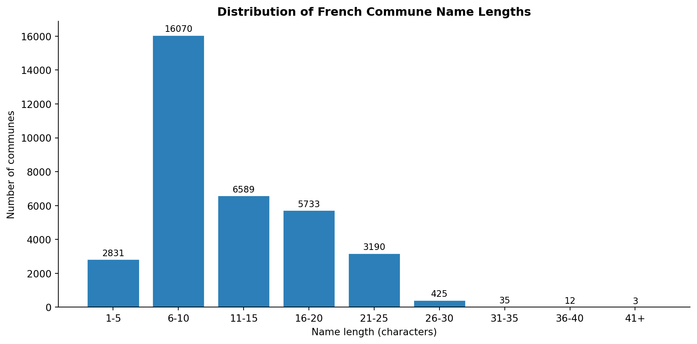
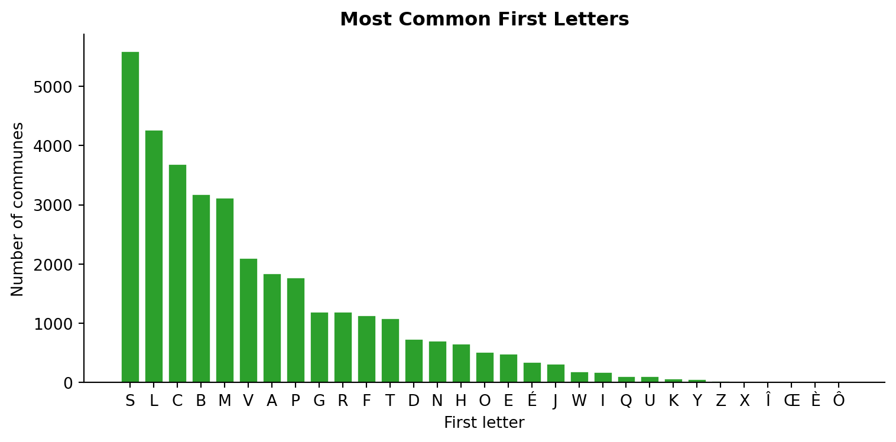
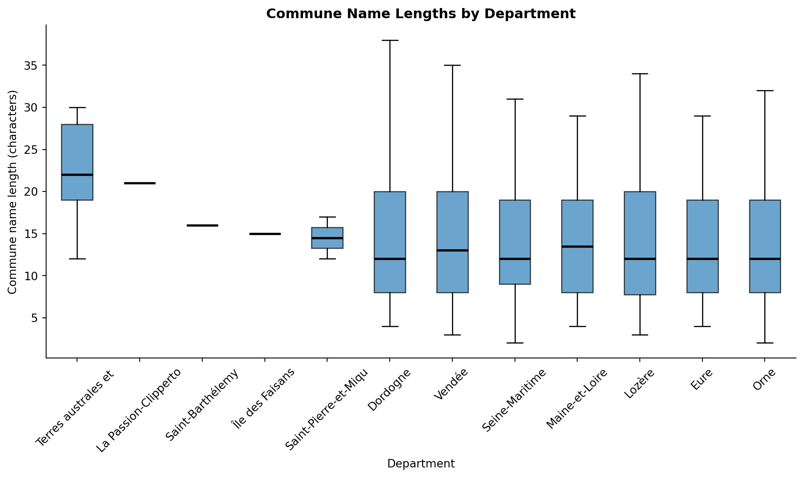

Code
from great_tables import GT, loc, style
from itables import show
import matplotlib.pyplot as plt
import pandas as pd
import polars as pl
from blog_utils import sql_to_dfThis post runs live queries against the lakehouse’s gold layer, which are Iceberg tables served via Apache Polaris and DuckDB.
The article queries a single table and carries factoid analysis of French commune names. The goal of this post is making sure we can connect to the lakehouse using quarto and our connection function sql_to_df.

We import sql_to_df and the libraries for data display:
from great_tables import GT, loc, style
from itables import show
import matplotlib.pyplot as plt
import pandas as pd
import polars as pl
from blog_utils import sql_to_dfLet’s start looking at how long French commune names tend to be
query_length_distribution = """
SELECT LENGTH(name) AS "Name lenght", COUNT(*) AS "Number of Communes"
FROM gold.dim_communes_france
GROUP BY "Name lenght"
ORDER BY "Name lenght"
"""
df_length_distribution = sql_to_df(query_length_distribution, dataframe_type="pandas")
show(df_length_distribution, caption="Name Length in french Communes")| Loading ITables v2.7.3 from the internet... (need help?) |
The shortest name is 1 character (Y), the longest is 45 characters (Saint-Remy-en-Bouzemont-Saint-Genest-et-Isson).
But characters include spaces and dashes. what if we only look for letters?
query_letter_distribution = """
SELECT LENGTH(REGEXP_REPLACE(name, '\P{L}', '', 'g')) AS "Letter count",
COUNT(*) AS "Number of Communes"
FROM gold.dim_communes_france
GROUP BY "Letter count"
ORDER BY "Letter count"
"""
df_letter_distribution = sql_to_df(query_letter_distribution, dataframe_type="pandas")
show(df_letter_distribution, caption="Number of letters in French Communes")| Loading ITables v2.7.3 from the internet... (need help?) |
Two towns have 38 letters, they are Saint-Remy-en-Bouzemont-Saint-Genest-et-Isson and Beaujeu-Saint-Vallier-Pierrejux-et-Quitteur. How long these names are!
We can also perform some summary statistics on the communes lengths:
query_length_stats = """
SELECT
MIN(LENGTH(name)) AS min_len,
CAST(AVG(LENGTH(name)) AS DECIMAL(5,1)) AS avg_len,
CAST(MEDIAN(LENGTH(name)) AS INTEGER) AS med_len,
MAX(LENGTH(name)) AS max_len
FROM gold.dim_communes_france
"""
df_length_stats = sql_to_df(query_length_stats, dataframe_type="pandas")
df_length_stats| min_len | avg_len | med_len | max_len | |
|---|---|---|---|---|
| 0 | 1 | 11.8 | 10 | 45 |
On average, we have a length (including spaces and dashes) of 11.8 characters, and a median value of 10 characters. Let’s take a look at shortest and longest commune names.
query_shortest_names = """
SELECT name, LENGTH(name) AS len
FROM gold.dim_communes_france
ORDER BY len
LIMIT 5
"""
df_shortest_names = sql_to_df(query_shortest_names, dataframe_type="pandas")
(
GT(df_shortest_names)
.tab_header(
title="Shortest Commune Names in France",
subtitle="Top 5 communes by name length (raw characters)"
)
.cols_label(
name="Commune Name",
len="Length (chars)"
)
.fmt_number(
columns="len",
decimals=0,
use_seps=False
)
.data_color(
columns="len",
palette=["#e8f5e9", "#4caf50", "#2e7d32"]
)
.tab_source_note("Source: gold.dim_communes_france")
)| Shortest Commune Names in France | |
| Top 5 communes by name length (raw characters) | |
| Commune Name | Length (chars) |
|---|---|
| Y | 1 |
| Ur | 2 |
| By | 2 |
| Bû | 2 |
| Sy | 2 |
| Source: gold.dim_communes_france | |
query_longest_names = """
SELECT name, LENGTH(name) AS len
FROM gold.dim_communes_france
ORDER BY len DESC
LIMIT 5
"""
df_longest_names = sql_to_df(query_longest_names, dataframe_type="pandas")
(
GT(df_longest_names)
.tab_header(
title="Longest Commune Names in France",
subtitle="Top 5 communes by name length (raw characters)"
)
.cols_label(
name="Commune Name",
len="Length (chars)"
)
.fmt_number(
columns="len",
decimals=0,
use_seps=False
)
.data_color(
columns="len",
palette=["#FFD700", "#FF8C00", "#FF0000"]
)
.tab_source_note("Source: gold.dim_communes_france")
)| Longest Commune Names in France | |
| Top 5 communes by name length (raw characters) | |
| Commune Name | Length (chars) |
|---|---|
| Saint-Remy-en-Bouzemont-Saint-Genest-et-Isson | 45 |
| Beaujeu-Saint-Vallier-Pierrejux-et-Quitteur | 43 |
| Saint-Martin-de-Bienfaite-la-Cressonnière | 41 |
| Montigny-Mornay-Villeneuve-sur-Vingeanne | 40 |
| Roche-sur-Linotte-et-Sorans-les-Cordiers | 40 |
| Source: gold.dim_communes_france | |
Looking at the full distribution, the 6-10 character length range is by far the most common bin in the histogram:
# Histogram: group into buckets for readability
buckets = [0, 5, 10, 15, 20, 25, 30, 35, 40, 999]
labels = ["1-5", "6-10", "11-15", "16-20", "21-25", "26-30", "31-35", "36-40", "41+"]
df_length_distribution["bucket"] = pd.cut(
df_length_distribution["Name lenght"], bins=buckets, labels=labels, right=True
)
hist = df_length_distribution.groupby("bucket", observed=True)["Number of Communes"].sum()
fig, ax = plt.subplots(figsize=(10, 5))
bars = ax.bar(hist.index, hist.values, color="#2c7fb8", edgecolor="white")
ax.set_xlabel("Name length (characters)")
ax.set_ylabel("Number of communes")
ax.set_title("Distribution of French Commune Name Lengths", fontweight="bold")
ax.spines["top"].set_visible(False)
ax.spines["right"].set_visible(False)
for bar, val in zip(bars, hist.values):
ax.text(bar.get_x() + bar.get_width() / 2, bar.get_height() + 200,
str(val), ha="center", fontsize=9)
plt.tight_layout()
plt.show()
Let’s explore which commune names appear most frequently across France. Many towns share the same name, often reflecting religious heritage (Saint names), geographic features, or historical figures.
query_most_common_names = """
SELECT name, COUNT(*) AS occurrences
FROM gold.dim_communes_france
GROUP BY name
HAVING occurrences > 8
ORDER BY occurrences DESC
"""
df_most_common_names = sql_to_df(query_most_common_names, dataframe_type="pandas")
(
GT(df_most_common_names)
.tab_header(
title="Most Frequent Commune Names in France",
subtitle="Names appearing more than 8 times across the country"
)
.cols_label(
name="Commune Name",
occurrences="Number of Communes"
)
.fmt_number(
columns="occurrences",
decimals=0,
use_seps=True
)
.data_color(
columns="occurrences",
palette=["#FFD700", "#FF8C00", "#FF0000"]
)
.tab_style(
style=style.text(weight="bold"),
locations=loc.body(rows=[0], columns="occurrences")
)
.tab_source_note("Source: gold.dim_communes_france")
)| Most Frequent Commune Names in France | |
| Names appearing more than 8 times across the country | |
| Commune Name | Number of Communes |
|---|---|
| Sainte-Colombe | 12 |
| Saint-Sauveur | 11 |
| Saint-Aubin | 10 |
| Beaulieu | 10 |
| Le Pin | 9 |
| Saint-Michel | 9 |
| Saint-Marcel | 9 |
| Sainte-Marie | 9 |
| Saint-Pierre | 9 |
| Source: gold.dim_communes_france | |
Beyond exact name duplicates, many communes share common prefixes or suffixes. Let’s split each commune name into individual words (ignoring hyphens) and see which components appear most frequently. We’ll ignore French stopwords.
# French stopwords (common words to exclude)
french_stopwords = {
"le", "la", "les", "un", "une", "des", "du", "de", "d'", "l'",
"et", "ou", "mais", "donc", "or", "ni", "car",
"sur", "sous", "dans", "avec", "sans", "par", "pour", "en", "vers", "entre",
"au", "aux", "chez", "après", "avant", "pendant", "depuis", "jusque",
"ce", "ces", "cet", "cette", "mon", "ton", "son", "notre", "votre", "leur",
"a", "à", "est", "sont", "était", "étaient", "être", "avoir", "ont",
"faire", "fait", "parce", "que", "qui", "qu'", "dont", "où", "quoi",
"je", "tu", "il", "elle", "nous", "vous", "ils", "elles",
"me", "te", "se", "y", "en", "lui", "leur"
}
query_all_names = """
SELECT name
FROM gold.dim_communes_france
"""
df_names = sql_to_df(query_all_names, dataframe_type="polars")
# Split names into words, handling spaces and hyphens
word_counts = (
df_names
.select(
pl.col("name")
.str.replace_all("-", " ") # Replace hyphens with spaces
.str.replace_all("'", " ") # Handle apostrophes (e.g., l'Église)
.str.split(" ")
.alias("words")
)
.explode("words")
.filter(
pl.col("words").str.len_chars() > 1, # Filter out single characters
~pl.col("words").str.to_lowercase().is_in(french_stopwords), # Exclude stopwords
pl.col("words").is_not_null(),
pl.col("words") != "" # Remove empty strings
)
.with_columns(
# Capitalize first letter for cleaner display
pl.col("words").str.to_titlecase().alias("words")
)
.group_by("words")
.len()
.sort("len", descending=True)
.limit(15)
)
(
GT(word_counts)
.tab_header(
title="Most Common Name Components",
subtitle="Top 15 meaningful words in French commune names (stopwords excluded)"
)
.cols_label(
words="Name Component",
len="Frequency"
)
.fmt_number(
columns="len",
decimals=0,
use_seps=True
)
.data_color(
columns="len",
palette=["#FFD700", "#FF8C00", "#FF0000"]
)
.tab_source_note("Analysis based on splitting names by spaces, hyphens, and apostrophes. Excludes common French stopwords and words shorter than 2 characters.")
)| Most Common Name Components | |
| Top 15 meaningful words in French commune names (stopwords excluded) | |
| Name Component | Frequency |
|---|---|
| Saint | 4,090 |
| Lès | 548 |
| Sainte | 359 |
| Martin | 256 |
| Bois | 218 |
| Pierre | 180 |
| Chapelle | 178 |
| Jean | 171 |
| Val | 132 |
| Germain | 120 |
| Mer | 109 |
| Villers | 108 |
| Mont | 102 |
| Château | 95 |
| Ville | 93 |
| Analysis based on splitting names by spaces, hyphens, and apostrophes. Excludes common French stopwords and words shorter than 2 characters. | |
Given how many French communes begin with “Saint-”, let’s analyze the most popular patron saints:
query_saint_names = """
SELECT
name,
REGEXP_EXTRACT(name, '^Saint[- ](.+?)(?:$|[- ])', 1) AS saint_name
FROM gold.dim_communes_france
WHERE name LIKE 'Saint-%' OR name LIKE 'Saint %'
"""
df_saints = sql_to_df(query_saint_names, dataframe_type="polars")
saint_counts = (
df_saints
.filter(
pl.col("saint_name").is_not_null(),
~pl.col("saint_name").str.to_lowercase().is_in(french_stopwords)
)
.with_columns(
# Handle compound saint names (e.g., "Jean Baptiste" -> keep as is)
pl.col("saint_name").str.strip_chars()
)
.group_by("saint_name")
.len()
.sort("len", descending=True)
.limit(10)
)
(
GT(saint_counts)
.tab_header(
title="Most Popular Patron Saints",
subtitle="Top 10 saints honored in French commune names"
)
.cols_label(
saint_name="Saint Name",
len="Number of Communes"
)
.fmt_number(
columns="len",
decimals=0,
use_seps=True
)
.data_color(
columns="len",
palette=["#FFD700", "#FF8C00", "#FF0000"]
)
.tab_source_note("Based on communes starting with 'Saint-' or 'Saint '")
)| Most Popular Patron Saints | |
| Top 10 saints honored in French commune names | |
| Saint Name | Number of Communes |
|---|---|
| Martin | 204 |
| Jean | 156 |
| Pierre | 144 |
| Germain | 108 |
| Julien | 78 |
| Laurent | 77 |
| Hilaire | 67 |
| Georges | 67 |
| Étienne | 65 |
| André | 64 |
| Based on communes starting with 'Saint-' or 'Saint ' | |
Finally, let’s look at common geographic qualifiers that appear in commune names:
query_geo_terms = """
SELECT name
FROM gold.dim_communes_france
"""
df_geo = sql_to_df(query_geo_terms, dataframe_type="polars")
# More comprehensive geographic patterns
geo_patterns = {
"sur": "situated on (river/hill)",
"sous": "under/below",
"en": "in",
"les": "the (plural)",
"le": "the (masculine)",
"la": "the (feminine)",
"près": "near",
"devant": "in front of",
"derrière": "behind",
"entre": "between"
}
geo_counts = []
for pattern, description in geo_patterns.items():
count = df_geo.filter(pl.col("name").str.contains(f"-{pattern}-| {pattern} ")).height
geo_counts.append({"qualifier": pattern, "meaning": description, "count": count})
df_geo_terms = pl.DataFrame(geo_counts).sort("count", descending=True)
(
GT(df_geo_terms)
.tab_header(
title="Common Geographic Qualifiers",
subtitle="Prepositional indicators found in French commune names"
)
.cols_label(
qualifier="Qualifier",
meaning="Meaning",
count="Number of Communes"
)
.fmt_number(
columns="count",
decimals=0,
use_seps=True
)
.data_color(
columns="count",
palette=["#FFD700", "#FF8C00", "#FF0000"]
)
.tab_source_note("Examples: 'Villefranche-sur-Saône', 'Saint-Germain-en-Laye', 'Bourg-la-Reine'")
)| Common Geographic Qualifiers | ||
| Prepositional indicators found in French commune names | ||
| Qualifier | Meaning | Number of Communes |
|---|---|---|
| sur | situated on (river/hill) | 2,004 |
| en | in | 1,003 |
| le | the (masculine) | 822 |
| la | the (feminine) | 662 |
| les | the (plural) | 468 |
| sous | under/below | 257 |
| près | near | 46 |
| devant | in front of | 25 |
| derrière | behind | 2 |
| entre | between | 2 |
| Examples: 'Villefranche-sur-Saône', 'Saint-Germain-en-Laye', 'Bourg-la-Reine' | ||
The first letter of a commune name can reveal interesting patterns about French toponymy. Let’s analyze which letters are most popular at the beginning of commune names.
query_first_letters = """
SELECT
UPPER(LEFT(name, 1)) AS letter,
COUNT(*) AS communes,
ROUND(COUNT(*) * 100.0 / SUM(COUNT(*)) OVER(), 1) AS percentage
FROM gold.dim_communes_france
GROUP BY letter
ORDER BY communes DESC
"""
df_first_letters = sql_to_df(query_first_letters, dataframe_type="pandas")
# Display with Great Tables
(
GT(df_first_letters.head(15))
.tab_header(
title="Most Common First Letters",
subtitle="Top 15 initial letters across all French commune names"
)
.cols_label(
letter="First Letter",
communes="Number of Communes",
percentage="Percentage (%)"
)
.fmt_number(
columns="communes",
decimals=0,
use_seps=True
)
.fmt_number(
columns="percentage",
decimals=1,
pattern="{x}%" # Add % suffix using pattern instead of suffix parameter
)
.data_color(
columns="communes",
palette=["#e8f5e9", "#4caf50", "#2e7d32"]
)
.tab_style(
style=style.text(weight="bold"),
locations=loc.body(rows=[0, 1, 2], columns="letter")
)
.tab_source_note("Source: gold.dim_communes_france")
)| Most Common First Letters | ||
| Top 15 initial letters across all French commune names | ||
| First Letter | Number of Communes | Percentage (%) |
|---|---|---|
| S | 5,595 | 16.0% |
| L | 4,273 | 12.2% |
| C | 3,694 | 10.6% |
| B | 3,187 | 9.1% |
| M | 3,128 | 9.0% |
| V | 2,108 | 6.0% |
| A | 1,853 | 5.3% |
| P | 1,781 | 5.1% |
| G | 1,200 | 3.4% |
| R | 1,197 | 3.4% |
| F | 1,143 | 3.3% |
| T | 1,090 | 3.1% |
| D | 741 | 2.1% |
| N | 715 | 2.0% |
| H | 661 | 1.9% |
| Source: gold.dim_communes_france | ||
fig, ax = plt.subplots(figsize=(8, 4))
ax.bar(df_first_letters["letter"], df_first_letters["communes"], color="#2ca02c", edgecolor="white")
ax.set_xlabel("First letter")
ax.set_ylabel("Number of communes")
ax.set_title("Most Common First Letters", fontweight="bold")
ax.spines["top"].set_visible(False)
ax.spines["right"].set_visible(False)
plt.tight_layout()
plt.show()
What about letters that never (or rarely) start a commune name?
query_missing_letters = """
WITH all_letters AS (
SELECT UNNEST(REGEXP_SPLIT_TO_ARRAY('ABCDEFGHIJKLMNOPQRSTUVWXYZ', '')) AS letter
),
used_letters AS (
SELECT DISTINCT UPPER(LEFT(name, 1)) AS letter
FROM gold.dim_communes_france
)
SELECT letter
FROM all_letters
WHERE letter NOT IN (SELECT letter FROM used_letters WHERE letter IS NOT NULL)
ORDER BY letter
"""
df_missing_letters = sql_to_df(query_missing_letters, dataframe_type="pandas")
if len(df_missing_letters) > 0:
print(f"📝 Letters that NEVER start a French commune name: {', '.join(df_missing_letters['letter'])}")
else:
print("✅ All letters of the alphabet appear at least once as a first letter!")✅ All letters of the alphabet appear at least once as a first letter!Different departments have distinct naming patterns. Let’s explore which departments have the longest commune names on average, and visualize the distribution of name lengths within the top departments.
query_dept_avg_length = """
SELECT
department_name,
ROUND(AVG(LENGTH(name)), 1) AS avg_length,
COUNT(*) AS communes,
MIN(LENGTH(name)) AS min_length,
MAX(LENGTH(name)) AS max_length
FROM gold.dim_communes_france
GROUP BY department_name
ORDER BY avg_length DESC
LIMIT 15
"""
df_dept_avg_length = sql_to_df(query_dept_avg_length, dataframe_type="pandas")
(
GT(df_dept_avg_length)
.tab_header(
title="Departments with Longest Commune Names",
subtitle="Top 15 departments by average name length (raw characters)"
)
.cols_label(
department_name="Department",
avg_length="Avg. Length",
communes="Number of Communes",
min_length="Min Length",
max_length="Max Length"
)
.fmt_number(
columns="avg_length",
decimals=1
)
.fmt_number(
columns=["communes", "min_length", "max_length"],
decimals=0,
use_seps=True
)
.data_color(
columns="avg_length",
palette=["#FFD700", "#FF8C00", "#FF0000"]
)
.tab_source_note("Source: gold.dim_communes_france")
)| Departments with Longest Commune Names | ||||
| Top 15 departments by average name length (raw characters) | ||||
| Department | Avg. Length | Number of Communes | Min Length | Max Length |
|---|---|---|---|---|
| Terres australes et antarctiques françaises | 24.4 | 5 | 15 | 37 |
| Île de Clipperton | 17.0 | 1 | 17 | 17 |
| Saint-Barthélemy | 16.0 | 1 | 16 | 16 |
| Vendée | 14.6 | 253 | 3 | 35 |
| Saint-Pierre-et-Miquelon | 14.5 | 2 | 12 | 17 |
| Dordogne | 14.2 | 503 | 4 | 38 |
| Lozère | 14.1 | 152 | 3 | 34 |
| Seine-Maritime | 14.0 | 707 | 2 | 35 |
| Maine-et-Loire | 14.0 | 176 | 4 | 29 |
| Eure | 14.0 | 585 | 4 | 29 |
| Orne | 13.9 | 381 | 2 | 32 |
| Haute-Vienne | 13.6 | 195 | 4 | 26 |
| Val-de-Marne | 13.5 | 47 | 4 | 24 |
| Meuse | 13.5 | 499 | 3 | 28 |
| Manche | 13.4 | 445 | 3 | 30 |
| Source: gold.dim_communes_france | ||||
# Box plot: name lengths for top 12 departments
top12 = df_dept_avg_length["department_name"].head(12).tolist()
dept_data = []
for d in top12:
rows_df = sql_to_df(
"SELECT LENGTH(name) AS len FROM gold.dim_communes_france "
"WHERE department_name = ? ORDER BY len",
[d],
dataframe_type="pandas",
)
dept_data.append(rows_df["len"].tolist())
fig, ax = plt.subplots(figsize=(10, 6))
bp = ax.boxplot(dept_data, tick_labels=[d[:20] for d in top12], patch_artist=True)
for patch in bp["boxes"]:
patch.set_facecolor("#2c7fb8")
patch.set_alpha(0.7)
for median in bp["medians"]:
median.set_color("black")
median.set_linewidth(2)
ax.set_xlabel("Department")
ax.set_ylabel("Commune name length (characters)")
ax.set_title("Commune Name Lengths by Department", fontweight="bold")
ax.tick_params(axis="x", rotation=45)
ax.spines["top"].set_visible(False)
ax.spines["right"].set_visible(False)
plt.tight_layout()
plt.show()
query_dept_shortest = """
SELECT
department_name,
ROUND(AVG(LENGTH(name)), 1) AS avg_length,
COUNT(*) AS communes
FROM gold.dim_communes_france
GROUP BY department_name
ORDER BY avg_length ASC
LIMIT 10
"""
df_dept_shortest = sql_to_df(query_dept_shortest, dataframe_type="pandas")
(
GT(df_dept_shortest)
.tab_header(
title="Departments with Shortest Commune Names",
subtitle="Top 10 departments by shortest average name length"
)
.cols_label(
department_name="Department",
avg_length="Avg. Length",
communes="Number of Communes"
)
.fmt_number(
columns="avg_length",
decimals=1
)
.fmt_number(
columns="communes",
decimals=0,
use_seps=True
)
.data_color(
columns="avg_length",
palette=["#e8f5e9", "#4caf50", "#2e7d32"]
)
.tab_source_note("Source: gold.dim_communes_france")
)| Departments with Shortest Commune Names | ||
| Top 10 departments by shortest average name length | ||
| Department | Avg. Length | Number of Communes |
|---|---|---|
| Wallis et Futuna | 4.3 | 3 |
| Paris | 5.0 | 1 |
| Mayotte | 7.9 | 17 |
| Hautes-Pyrénées | 8.7 | 469 |
| Corse-du-Sud | 9.2 | 124 |
| Morbihan | 9.5 | 249 |
| Guyane | 9.6 | 22 |
| Ariège | 9.8 | 325 |
| Haute-Corse | 9.8 | 236 |
| Pyrénées-Atlantiques | 10.0 | 545 |
| Source: gold.dim_communes_france | ||
Not all departments are created equal when it comes to the number of communes. Let’s see which departments have the highest number of communes.
query_most_communes_dept = """
SELECT
department_name,
COUNT(*) AS communes,
ROUND(AVG(LENGTH(name)), 1) AS avg_name_length,
ROUND(STDDEV(LENGTH(name)), 1) AS stddev_length
FROM gold.dim_communes_france
GROUP BY department_name
ORDER BY communes DESC
LIMIT 10
"""
df_most_communes_dept = sql_to_df(query_most_communes_dept, dataframe_type="pandas")
(
GT(df_most_communes_dept)
.tab_header(
title="Departments with Most Communes",
subtitle="Top 10 departments by total number of communes"
)
.cols_label(
department_name="Department",
communes="Number of Communes",
avg_name_length="Avg. Name Length",
stddev_length="Std. Deviation"
)
.fmt_number(
columns=["communes", "stddev_length"],
decimals=0,
use_seps=True
)
.fmt_number(
columns="avg_name_length",
decimals=1
)
.data_color(
columns="communes",
palette=["#f3e5f5", "#9c27b0", "#4a148c"]
)
.tab_style(
style=style.text(weight="bold"),
locations=loc.body(rows=[0], columns="communes")
)
.tab_source_note("Source: gold.dim_communes_france")
)| Departments with Most Communes | |||
| Top 10 departments by total number of communes | |||
| Department | Number of Communes | Avg. Name Length | Std. Deviation |
|---|---|---|---|
| Pas-de-Calais | 887 | 11.1 | 5 |
| Aisne | 797 | 11.6 | 5 |
| Somme | 771 | 11.4 | 5 |
| Moselle | 725 | 10.4 | 4 |
| Seine-Maritime | 707 | 14.0 | 6 |
| Côte-d'Or | 698 | 12.1 | 6 |
| Oise | 680 | 11.8 | 5 |
| Nord | 647 | 10.7 | 5 |
| Marne | 610 | 12.0 | 6 |
| Meurthe-et-Moselle | 591 | 11.2 | 5 |
| Source: gold.dim_communes_france | |||
This article is completely useless.
But it’s also great fun! Sometimes the best part of working with data is following your curiosity down rabbit holes, asking silly questions, and seeing what interesting (if impractical) patterns emerge.
French commune names tell a story of saints, rivers, history and geography, of hyphenated mouthfuls and mysterious single-letter towns like “Y”. We’ve learned that:
I hope you had as much fun reading this as I did running the queries. 🥖🇫🇷
Data source: French commune registry via Iceberg tables, served through Apache Polaris and DuckDB. Queries run live when generating the article (and it’s uploaded in fixed state).